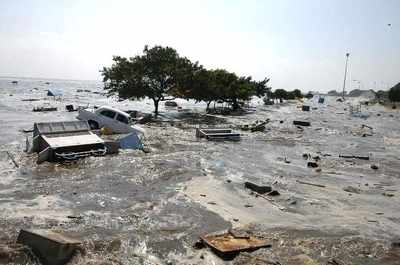

It was a relatively cool February day in Chennai, one of India's largest cities and the capital of the state of Tamil Nadu. A brisk breeze was in the air, and the rain had finally ended. Chennai was still reeling from the devastating Indian Ocean Tsunami of 2004, and hardship and strife were abundant.
texttexttexttexttexttexttexttextexttexttexttexttexttexttexttexttexttexttexttexttexttexttexttexttexttexttext
The destruction of the Indian Ocean Tsunami
But those feelings were not in the minds of my parents and my grandparents. My father had hastily flown thousands of miles from Tokyo in order to witness the birth of his first child, and emotions ranging from anxiety to fear were racing through his head. My mother, who had learned that she would have a son nine months ago, and had waiting for this moment for seemingly enternity. But finally the moment arose: on February 10, 2004, a beautiful, healthy baby boy entered the world. My entire family felt nothing but joy, and so my father named me Anand, or "joy" in Hindi. And this was how my journey of life began.